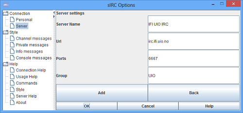
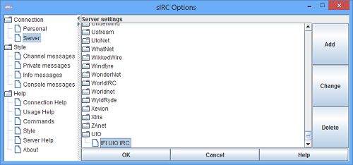

You can go into Options -> Server to configure sIRC with your personal servers
Server that are chosen in the tree will appear as selected server when you return to personal options, this server will also become you selected server next time you start sIRC.
Personal servers can easily be added or edited by using the change or add buttons in server settings.
We add a new server with standard port for irc.
The new server is now added and ready for use, located in the server tree.